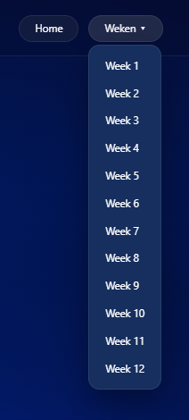
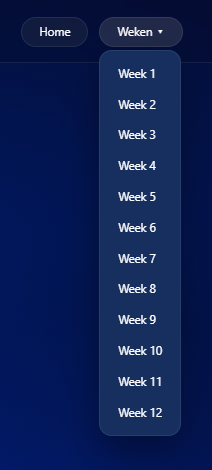

Doel van de week
Deze week heb ik een dropdown toegevoegd aan mijn website. Hiermee kunnen gebruikers extra opties bekijken zonder dat de pagina te druk wordt. De dropdown werd opgebouwd binnen de bestaande HTML-structuur en gestyled met CSS zodat deze aansluit bij de rest van het ontwerp.
resultaat
 

Reflectie
Het maken van de dropdown was in het begin even zoeken, vooral om alles correct te laten werken en er overzichtelijk uit te laten zien. Door te testen en kleine aanpassingen te maken, begon ik beter te begrijpen hoe interactieve elementen opgebouwd zijn. Deze stap zorgde ervoor dat mijn website functioneler werd en hielp me om meer na te denken over gebruiksvriendelijkheid.